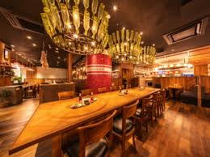
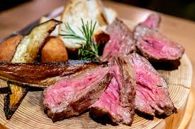
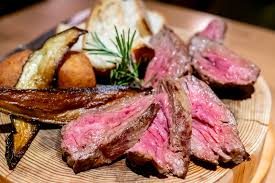
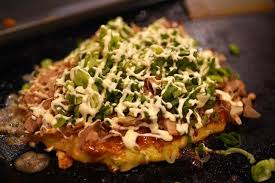
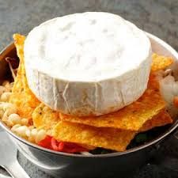
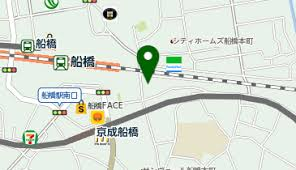
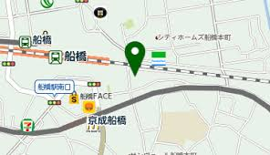
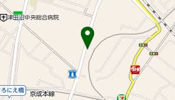
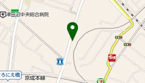
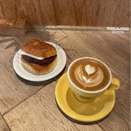

Italian Kitchen VANSAN

主にパスタに肉料理、ワインが楽しめるお店。
生ハムなど軽めに食べれるものもあり、小食の女性でも気軽に行くことができる。
人気メニューのハラミステーキチーズフォンデュとたっぷりのカットステーキは、女子会であればシェアしながら食べることが出来る。
主にパスタに肉料理、ワインが楽しめるお店。
生ハムなど軽めに食べれるものもあり、小食の女性でも気軽に行くことができる。
人気メニューのハラミステーキチーズフォンデュとたっぷりのカットステーキは、女子会であればシェアしながら食べることが出来る。

お好み焼き、もんじゃなどの鉄板料理を楽しむことが出来るお店。
場所は津田沼から2分の場所にあるため、行きやすい。
人気メニューは粉と水のヘラクレスとカマンベールチーズもんじゃ。
粉と水のヘラクレスはエビやホタテの海鮮、豚ロース肉などを贅沢に合わせたお好み焼きで、甘めのソースが人気。
カマンベールチーズもんじゃは女性人気が高く、カマンベールチーズを丸々一戸使った絶品の一品。人気のトッピングは明太子。
 

9/24にオープンしたばかりのカキ料理がおいしい居酒屋で、お店のカキは春はもちろん冬期も一年中おいしいカキを提供している。
大人数の団体で来れたり、誕生日会や記念日にも適していて、女子会にはピッタリ。
人気料理はカキのアヒージョ。ニンニクが効いていてバケットにのせて食べるのがおいしい。
 

スペシャルティコーヒーの豆を常時数種類そろえるお店。
特徴としてはラテアート、手頭栗焼き菓子や習志野ソーセージを使ったパニーニなども提供している。
注目はトーストとスープのモーニングコーヒーセットで、パンとスープが日替わりで、パンの付け合わせを発酵バター、ハチミツ、メープルから選ぶことが出来る。